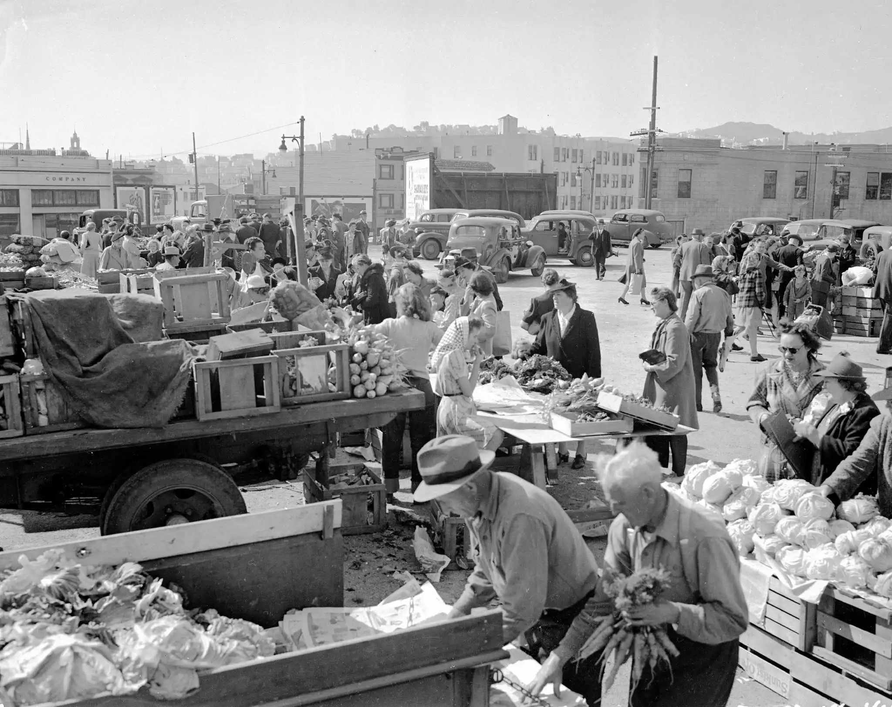

Farmers markets have a rich history dating back centuries.
They were originally the primary way for farmers to sell their produce directly to consumers,
often taking place in town squares, village centers, or along main roads. Before the advent of
modern transportation and refrigeration, farmers markets provided communities with fresh, seasonal
ingredients and goods.

The mission of farmers markets is to provide a platform
for local farmers, growers, and artisans to sell their products directly to consumers.
They promote sustainable agriculture, support small-scale farmers, and preserve traditional
farming practices. Farmers markets often prioritize freshness, quality, and authenticity,
offering a diverse array of locally grown fruits, vegetables, meats, dairy products, baked goods,
and artisan crafts.